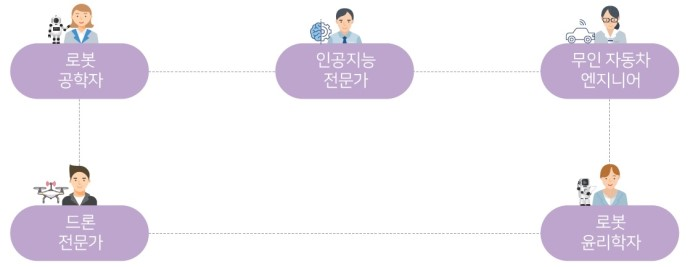

- 로봇
- 바이오
- 연결
- 안전
로봇
로봇 공학자: 모든 분야에서 사람을 대신할 수 있는 로봇을 제작
인공지능 전문가: 스스로 사고하고 추론하는 능력을 가진 컴퓨터시스템을 개발
무인 자동차 엔지니어: 무인 자동차가 도로를 달리는 데에 필요한 전문 분야의 첨단 기술을 설계하고 개발
드론 전문가: 드론의 비행을 제어하는 소프트웨어를 개발
로봇 윤리학자: 로봇을 어떻게 만들어야 하며, 어떤 로봇이 윤리적으로 바람직하지 않은가에 대해 질문하고 여기에 대해 답을 찾는 연구
